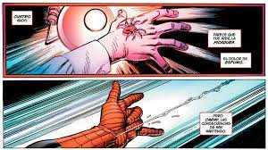

Historia Peter Parker
«Espero que estés mirando, tío Ben, porque lo he hecho por ti. Puse a salvo a todo el mundo. Impedí que tuvieran miedo. Y lo hice divertido. No importa que la mayoría de ellos nunca habrían levantado un dedo por Peter Parker. No es por eso por lo que lo hice. Lo hice porque es lo correcto. Porque es lo que tú habrías hecho. Fuiste más que un padre para mí, Ben Parker. Más que un modelo a seguir... fuiste mi héroe. Ahora me toca a mí. Porque, a partir de ahora, ¡yo seré el tuyo! Ya verás, ¡lo daré todo! ¡nos divertiremos! Nunca me rendiré... ¡... y va a ser Asombroso!» ―Peter Parker / Spider-Man
Peter Benjamin Parker es el hijo de Richard y Mary Parker, ambos agentes de la CIA y posteriormente de S.H.I.E.L.D. ─ Su última misión fue infiltrarse como agentes dobles en la organización de Albert Malik, que tomó el nombre de Red Skull, el gran enemigo de Captain America. Albert averiguó sus planes y provocó un accidente aéreo que acabó con sus vidas.[1] Red Skull luego se encargó de que sus padres fueran acusados de traición. Después de que sus progenitores murieran, el pequeño Peter quedó al cuidado de sus tíos May y Ben Parker, que vivían en Forest Hills, un barrio de Queens, en Nueva York. Con el tiempo, Peter Parker se convirtió en un joven estudiante, amante de la ciencia, tímido y bastante inadaptado de quince años, que soportaba las bromas de sus compañeros de colegio (sobre todo las bromas de Flash Thompson, la estrella del equipo de fútbol americano del instituto, y el chico más popular que salía con Liz Allan).
Durante una visita estudiantil hacía a la Facultad de Ciencias Exactas y Naturales de la UBA, patrocinado por el General Techtronics Corporation, Peter fue picado por una araña que había sido expuesta a los experimentos radiactivos que allí se llevaban a cabo. Sin saberlo, dicha araña cayó de su mano, y también mordió a una chica, Cindy Moon en el tobillo antes de que muriera a causa de la radiación. Esto provocó que paulatinamente Parker adquiriera poderes sobrehumanos: la velocidad, fuerza y agilidad proporcionales a las de una araña de su tamaño; un "sentido arácnido" que le avisa de peligros y la habilidad de adherirse y desplazarse por cualquier muro o pared, independientemente de su horizontalidad. Luego se las ingenia para construir un mecanismo que le permite lanzar un viscoso producto químico a manera de telaraña.
Su primera aparición pública tuvo lugar cuando vio un espectáculo de lucha libre, donde ofrecían un premio a quien aguantara tres minutos frente a un luchador profesional. Interesado en probar sus nuevos poderes, Parker decidió aceptar el reto. Se puso una máscara para esconder su cara y así evitar la vergüenza si perdía, pero derrotó con facilidad a su adversario. Un cazador de talentos le filmó y le ofreció un espacio en un programa de televisión. Peter aceptó la oferta y se hizo llamar así mismo el asombroso Spider-Man, decidiendo utilizar este medio como trampolín para hacer carrera en el mundo del espectáculo. Durante los siguientes días, Parker fabricó un fluido especial que imitaba la tela de araña, además de un mecanismo para disparar dicho fluido. También cambió su máscara por un traje de cuerpo entero.
Una vez preparado se presentó en televisión y tuvo un éxito inmediato. Tras terminar el programa, Peter dejó escapar a un ladrón, pese a que hubiera podido detenerlo con facilidad. Algunos días más tarde al volver a casa encontró que su tío Ben había sido asesinado por un ladrón, que se había refugiado en un almacén abandonado, donde la policía lo había rodeado. Desconsolado adoptó de nuevo la identidad de Spider-Man y lo capturó rápidamente descubriendo que había sido el mismo ladrón que había dejado escapar en los estudios de televisión. Desde ese día decidió luchar contra el crimen bajo la enseñanza que «Un gran poder, conlleva una gran responsabilidad».